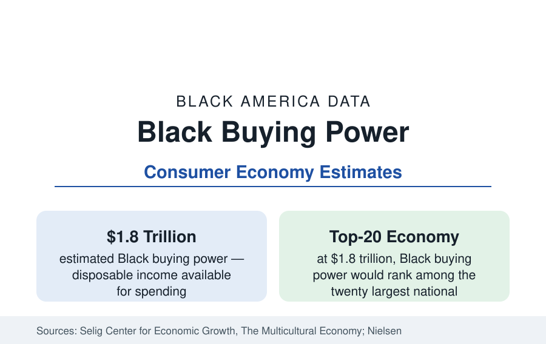

Black Business
Black Buying Power: The $1.8 Trillion Consumer Economy
Black buying power is estimated at about $1.8 trillion — larger than the economy of most nations. What the figure measures, who produces it, and what it buys.

Black buying power — the total disposable income available to Black consumers for spending — is estimated at about $1.8 trillion in the University of Georgia Selig Center's Multicultural Economy report, the standard source for the statistic, with consumer research firms reporting figures in the same range. The number is quoted constantly in business coverage, often loosely. This article states precisely what it measures, how it is constructed, where it is concentrated, and what the spending data show Black consumers actually buy — and, equally important, what buying power is not: it is income available for consumption, not wealth, and the distance between the two figures is one of the central facts of this reference.
What Buying Power Measures
The Selig Center defines buying power as total personal income after taxes — wages, salaries, transfer payments, investment income, and all other receipts — that residents of a group can spend, save, or invest, estimated from Census Bureau, Bureau of Labor Statistics, and Bureau of Economic Analysis data. It is therefore the income data of this reference, aggregated: roughly, the earnings of the employment section pooled across 52.8 million people. The figure's growth over time reflects population growth, rising educational attainment, and rising real incomes; the Selig series shows Black buying power multiplying several-fold since 1990, outpacing the growth of the total market. Per capita, it remains below the national figure — the aggregate is large because the population is large.
Where It Is Concentrated
Buying power follows population, with income adjustments. The Selig Center's state rankings place the largest Black consumer markets in New York, Texas, California, Georgia, and Florida — the same states that lead the census section's population tables — with the fastest growth rates recorded across the South, where income gains compound in-migration. At the metro level, New York, Atlanta, Washington, Chicago, Houston, Dallas, and Los Angeles form the top tier. Marketers use these rankings to allocate advertising and retail investment, which is one reason the statistic is produced at all: it is fundamentally a market-planning number.
What the Spending Data Show
Consumer expenditure surveys and industry research describe a distinctive spending profile. Black households devote larger shares of spending than the national average to housing and utilities, apparel, personal care products and services — where Black consumers account for a share of the beauty and grooming market far above their population share, sustaining the sector documented in this section's business profiles — food at home, and telecommunications and media services. Black consumers are measured as the heaviest television and streaming audiences in the country in Nielsen's panels, and among the earliest and most intensive adopters of social platforms, which is why the group's media influence is consistently rated above its income share in industry analyses. Spending on education and on children's goods also runs above average share, consistent with the household data of the census section.
Buying Power Is Not Wealth
The critical interpretive point of this article is the contrast with the wealth data. A group can command $1.8 trillion in annual spending flow while holding median net worth of $44,900 — because buying power measures a year's income passing through households that, on the evidence of the balance-sheet data, retain only a small fraction of it as assets. Nearly all of the $1.8 trillion is consumed by necessity: housing, food, transportation, health care, and debt service, at prices and rates the other articles of this reference document. Analysts of Black economic life summarize the distinction as the difference between a market and a fortune: Black America is one of the largest consumer markets on earth and, simultaneously, holds a small share of the nation's wealth. Both statements are true, and confusing the first for prosperity is the single most common error in popular use of this statistic.
How the Figure Is Used
Produced carefully, the buying-power series serves this reference as the aggregate demand side of the Black economy: it explains the retail, media, and consumer-goods industries' investment in Black consumers, the advertising markets documented in this site's own sponsorship model, and the economic weight behind the business formation in the rest of this section. Its companion figures — the income median, the earnings ratio, and the net-worth median — are the supply side and the balance sheet. Read together, they are the complete account.
In sum: about $1.8 trillion in annual disposable income, concentrated in the great Black population states and metros, spent disproportionately on housing, care, media, and family — a consumer economy the size of a major nation's, flowing through households whose accumulated wealth remains, on the Federal Reserve's measure, a fraction of the national level. The size of the flow and the thinness of the stock are both the data.
More in Black Business
Black-Owned Businesses: Counts, Receipts, and the Representation Gap
About 161,000 Black-owned employer firms and three million solo ventures: how the Census Bureau counts Black business ownership, where firms concentrate, and the gap between population share and business share.
Black Median Net Worth: The Wealth Gap in Federal Reserve Data
The Federal Reserve puts Black median family net worth at $44,900, against $285,000 for White families — about 16 cents on the dollar. The widest gap in economic data.
Black-Owned Businesses by Industry: Where the Firms Are
Health care and social assistance is the largest industry of Black business — nearly a third of employer firms. The Annual Business Survey industry profile.
Source: University of Georgia, Selig Center for Economic Growth, The Multicultural Economy; Nielsen consumer reports.